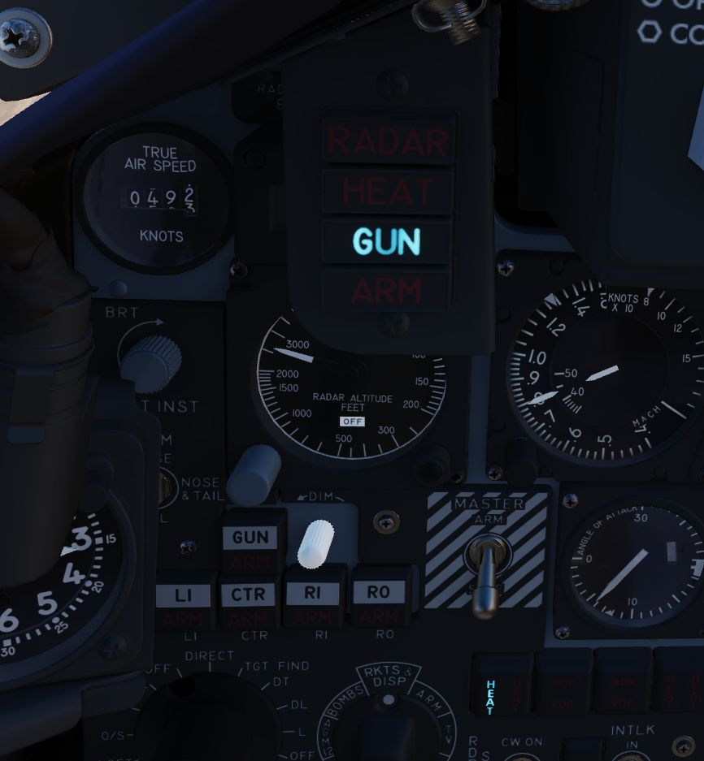
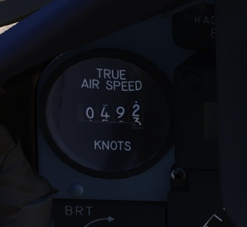
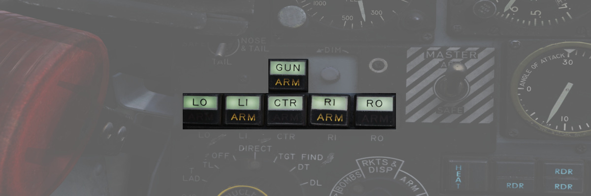
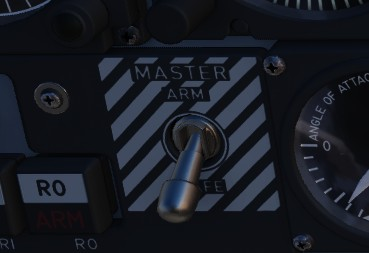
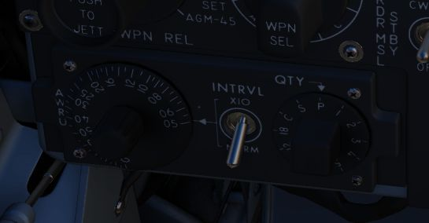
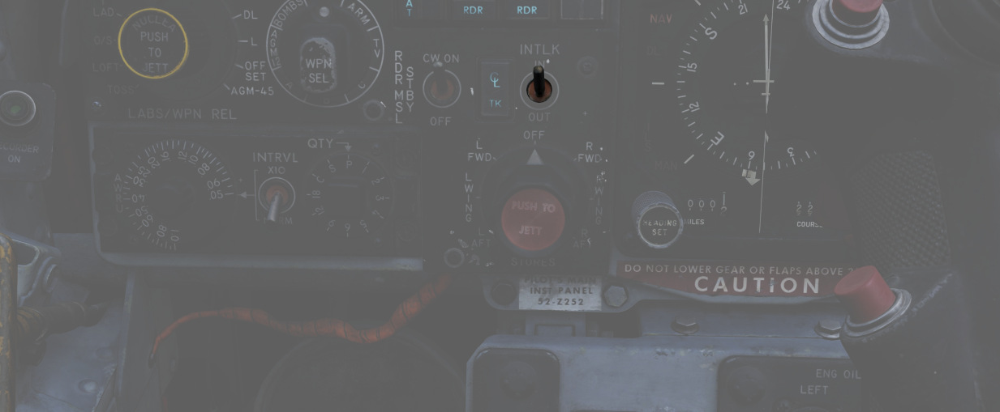

Weapon Management

Head Up Display Indicators

The Head Up Display indicator panel provides weapon status for the Master Arm control as well as the current selected air-to-air weapon based on the position of the Guns/Missile switch on the left throttle handle.
| Name | Description |
|---|---|
| RADAR | Illuminates when a radar-guided air to air missile is selected. |
| HEAT | Illuminates when an IR-guided air to air missile is selected. |
| GUN | Illuminates when the nose gun is selected. |
| ARM | Illuminates when the Master Arm switch is selected to ARM. |
UHF Remote Channel Indicator

Provides the current selected channel value when the radio is set to PRESET. Otherwise, the indicator displays M if the radio is set to Manual, G when the COMM function is set as GUARD/ADF, or A when the A-3-2-T switch is in A.
True Airspeed Indicator

Provides the aircraft's true Airspeed in knots, and is calibrated from 150 to 1500 knots; airspeeds below this range are thus not reliable.
Flight Instrument Brightness Knob

Controls brightness of the flight instrument cluster.
Rotating clockwise will increase brightness of all flight instrument lights, while at the same time dim the HSI mode and warning and caution lights, except FIRE and OVERHEAT.
Flight instrument lights can additionally be controlled individually with knobs on the Flight Instrument Lights Intensity Panel, located on the right wall.
Nose/Tail Arming Switch

Controls the arming solenoids of the MER and TER racks, selecting what MER/TER position(s) arming lanyards are pulled from released bomb fuzes upon separation, thus making them live. This function also controls selective low/high drag capability for retarded bombs.
| Name | Description |
|---|---|
| SAFE | No arming solenoids activate; bombs release without fuzing enabled. |
| NOSE | Forward and center position solenoids activate to hold arming lanyards. |
| TAIL | Aft position solenoids activate to hold arming lanyards. |
| NOSE/TAIL | Forward, center, and aft position solenoids all activate to hold arming lanyards. |
Station Select Buttons

The Station Select Buttons are used to activate air to ground munition stations and the nose gun. Upon selection of a station, the upper half denoting the position will illuminate green to confirm the station is active. The lower half will illuminate amber once the necessary mode is selected, the weapon is compatible with the weapon select knob option, the Master Arm is in the ARM position, and any necessary warm up period for the selected weapon type is completed. L and R positions are left and right, respectively, with O denoting outboard and I denoting inboard stations. The centerline weapon position is CL, and the nose gun is armed with the GUN station selector button.

A dimmer knob is also provided to raise or lower the lighting of the station select buttons relative to current cockpit conditions. If the Flight Instrument Brightness Knob above it is set to the full CCW position, it overrides the dimmer knob and Station Select Buttons are always illuminated at full brightness.
Master Arm Switch

Provides master arming function for all aircraft weapons.
Delivery Mode Knob

The Delivery Mode Knob sets the fire control system to the desired air to ground weapon release type. Split into two halves, the left side of the dial references ARBCS (Altitude Reference and Bombing Computer Set) delivery modes, while the right side provides automated release functions using the WRCS (Weapon Release Computer Set) with possible tie-in to the navigation computer, depending on mode. At the 11 and 12 o'clock positions are the OFF position, which is utilized for air-to-air weapons (including the gun) and DIRECT, which is used for video-directed weapons such as the AGM-65 and as a direct delivery bombing mode. The full series of positions is as follows, clockwise from the left:
| Name | Description |
|---|---|
| INST O/S | Instantaneous Over the Shoulder |
| LOFT | Loft |
| O/S | (Timed) Over the Shoulder |
| T LAD | Timed LADD (Low Angle Drogue Delivery) |
| TL | Timed Level |
| OFF | Off (Air to Air) |
| DIRECT | Manual Direct |
| TGT FIND | Target Find (Nav mode and Pave spike only) |
| DT | Dive Toss |
| DL | Dive Laydown |
| L | Laydown |
| OFF SET | Offset Bomb |
| AGM-45 | AGM-45 |
Weapon Selector Knob

Selected for the type of weapon currently required, providing release signals to the AWRU (Aircraft Weapons Release Unit). ARM and TV positions inhibit air to air weapon firing unless a CAGE signal is active. ARM and TV positions do not affect tuning status of radar guided weapons. Positions are as follows:
| Name | Description |
|---|---|
| AGM-12 | Not used. |
| BOMBS | Bombs (all types). |
| RKTS & DISP | Rockets and dispensers. |
| ARM | Anti-Radiation Missile (AGM-45 Shrike). |
| TV | Electro-optical weapons (AGM-65 Maverick). |
| C | Not used; may be utilized as an OFF position. |
| B | Like AIR TO AIR switch in rear cockpit, cancels CAGE requirement. |
| A | Simultaneous release mode for CBU, rockets, or dispensers; bombs do not release. |
Aircraft Weapons Release Unit

Provides timed interval release scheduling of single or multiple bombs or rockets and dispensed munitions based on the selections made between the interval knob, the QTY (quantity) knob and the INTRVL switch.
The interval knob provides release pulse sequences between 0.05 second and 1 second.
The INTRVL switch provides the option of a 10x multiplier of the set value of the interval knob. In the NORM position, the interval knob value is the trigger timer. The quantity knob functions as follows:
Selecting "1" places the AWRU into single manual bombing mode; one push of the bomb release button releases one bomb.
Selecting a value from "2" to "18" sets the AWRU into single ripple mode; in this mode, the AWRU will release bombs according to the programmed interval until the set number of rounds is dropped, or the bomb button is released. Upon release, the count is reset, and a subsequent press and hold will drop the programmed number of bombs.
Selecting "C" sets the AWRU into single continuous mode; pressing the bomb release button drops rounds according to the programmed interval until the bomb button is released, or all munitions from the selected pylons are expended.
The "P" setting is for pairs manual mode. With at least two stations selected, each push of the bomb button will release two bombs; like single manual mode, this does not include an interval function.
Lastly, the "S" setting, for salvo, releases bombs in accordance to the chosen interval from all selected stations simultaneously, until the bomb button is released. Ergo, if four stations are selected with a 2 second interval (0.2 on the interval dial, X10 INTRVL switch setting), four bombs will be released every two seconds the pickle button is held down.
Missile Status Lights

The Missile Status Light window provides confirmation of currently installed and configured air-to-air missiles.
The RDR lights illuminate once AIM-7 missiles are properly tuned with the fire control system; any station that does not carry a Sparrow, does not correctly sync up during tuning, or is launched, will turn off.
The HEAT lights illuminate one at a time, rather than all up upon circuit configuration. The light of the currently selected station will illuminate beginning at the raising of the gear handle, and remain in that position until the weapon is either cycled using the throttle's Gun/Missile Switch reject option, or is launched. The HEAT light arrangement corresponds with the launch sequence of the AIM-9.
Radar Missile Power Switch

The Radar Missile Power Switch provides power to the CW tuning drive and monitoring functionality.
When switched out of the OFF position, power is applied to the circuit 30 seconds after this selection.
The STBY position maintains warmup power to the missiles and CW tuning drive once the missiles have been tuned.
The CW ON position allows for constant tuning and missile state monitoring with the radar mode not in TV.
Tuning can be performed on the ground with the radar in TEST mode to preclude emissions endangering ground crew.
Centerline Tank Aboard Light

Illuminates when a stores condition exists that precludes ejection and launch of an AIM-7 missile installed in one of the two forward positions.
Interlock Switch

A two position switch that determines whether the fire control system launch parameter interlocks can prevent an AIM-7 from being launched when the trigger is pulled.
| Name | Description |
|---|---|
| IN | Interlocks engaged; range limits, ASE limits, or radar not in visual intercept inhibits launch. |
| OUT | Interlocks override; AIM-7 will fire when trigger is pulled even when no launch condition is met. |
Selective Jettison Control

The Selective Jettison Control knob provides the pilot direct access to dump stores on a position by position basis, or immediate release of all single carried air to ground, MER/TER stored, or LAU-88 launcher-mounted round at once.
| Name | Description |
|---|---|
| OFF | Safes PUSH TO JETT button on the Selective Jettison Control Panel. |
| STORES | Releases all MER/TER, single carried, LAU-88 mounted rounds, or drop tanks upon PUSH TO JETT. |
| L/R FWD | Jettisons AIM-7 from respective position on PUSH TO JETT. Inhibited if CL TK ON. |
| L/R AFT | Jettisons AIM-7 from respective position on PUSH TO JETT. |
| L/R WING | In conjunction with TV or ARM, jettisons single AGM-65 from wing on PUSH TO JETT. |
Recorder Lamp

This dimmable lamp is lit to indicate operation of the Airborne-Video-Tape-Recorder (AVTR).
The AVTR system is controlled by the WSO and records the intercom sound, as well as the rear radar screen.